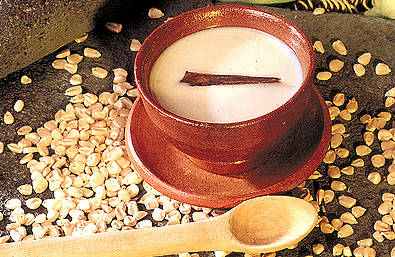

ATOLES SALVADOREÑOS
ATOLES TIPICOS SALVADOREÑOS
Resetas Salvadoreñas como
Atol Shuco

Ingredientes
- 2 lb de Maiz, morado o negro
- Frijoles cocidos enteros
- Alguashte en agua
- Chile
- Sal al gusto
Preparacion (Pasos)
- Ponga a remojar el maiz en agua limpia, luego se muele y se deja reposar en agua
- Al momento de preparar, se debe colar el maiz utilizando un colador o una tela muy fina
- Se puede añadir agua de manera que la prepracion no quede muy espesa, se le agrega sal y se pone a hervir
Chilate

Ingredientes
- 1 taza de maiz (puede ser maseca)
- 1 raiz mediana de jengibre
- Pimienta gorda
Preparacion (Pasos)
- Diluir la masa en un litro y medio de agua
- Se pone a cocinar a fuego bajo hasta que espese
- Luego se agrega el jengibre en rodajas, la pimienta gorda y se deja hervir
- Se deja hervir durante 25 minutos y listo!
Atol de elote
Ingredientes
- (258 g.) 1 ¾ taza de elote dulce recien desgranado
- (187 ml.) ¾ taza de agua
- (95 g.) ½ taza de azucar blanca
- (500 ml.) 2 tazas de leche
- (8 g.) 2 rajas de canela
Preparacion (Pasos)
- Licuar los granos de elote con el agua hasta formar una mezcla consistenmte
- Pasar la mezcla por un colador fino y reservar el liquido
- Verter la mezcla colada en una cacerola a fuego bajo
- Agregar la azucar, la leche y la canela
- Cocinar por 10 minutos a fuego bajo revolviendo constantemente hasta que espese
- Retirar las rajas de canela
- Servir tibio o refrigerar por 4 horas para disfrutar frio
Atol de maiz tostado

Ingredientes
- 2 tazas de maiz
- 2 vasos de leche
- Canela en raja
- ½ cucharada de sal
- 8 granos de pimienta gorda
- Azucar al gusto
- Sal al gusto
Preparacion (Pasos)
- Tostar el maiz con una parte de la canela en un comal
- Moler el maiz previamente tostado
- Disuelva la harian de maiz en 10 tazas de agua y cuela en una manta para colar
- Luego lo pones al fuego en una olla
- Agrega el resto de la canela, la pimienta, sal y azucar
- Dejar hervir y revolver constantemente
- Cuando el atol este hirviendo agrega los dos vasos de leche. Espera que suelte hervor y retira del fuego
Atol de piña
Ingredientes
- Piña mediana
- ½ panela
- 1/4 taza maicena
- 8 Pimientas gorda al gusto
- 4 clavos de olor
- 2 1/2 Litros agua
Preparacion (Pasos)
- Coloca los trozos de piña y su jugo con 3 tazas de agua en la jarra de tu licuadora, y licua hasta que estén bien molidos
- Usando un colador, vierte la mezcla en una ollita. Añade la raja de canela y cocina a temperatura media alta.
- Mezcla la masa-harina la taza de agua restante. Mezclar muy bien
- Añadir el azúcar y mantener la cocción de 6-8 minutos más hasta que la mezcla se haya espesado. Retira la canela antes de servir.
Atol de leche Poleada
Ingredientes
- 100 gramos de maicena (1 cajita
- 1½ litros de leche
- 4 yemas de huevo
- 1 raja de canela
- 1 taza de azúcar (ajusta al gusto durante coccion)
- 2 cucharadas de esencia de vainilla (natural es mejor)
- Pizca de sal
Preparacion (Pasos)
- ponemos en licuadora ½ litro de leche, azúcar, yemas y la maicena.
- Mientras tanto, ponemos el litro de leche a calentar y luego agregamos lo que licuamos y mezclamos muy bien.
- ontinuamos cocinando la mezcla hasta que hierva todo junto a fuego suave, agregar raja de canela en el proceso y la vainilla. Mueva constantemente con cuchara de madera hasta que hierva y espese.
- Retire del fuego y deje enfriar.
Arroz en leche
Ingredientes
- 4 tazas de leche
- 4 tazas de agua
- 1 taza de azúcar
- 1 taza de arroz corriente (no pre-cocido)
- 4 rajas de canela
- 2 cucharadas de mantequilla
- 1 pizca de sal
- 1/8 cucharadita de nuez moscada en polvo
- 1/8 cucharadita de nuez moscada en polvo
Preparacion (Pasos)
- Poner a cocer a fuego medio, el arroz en el agua junto con la canela, la mantequilla y la pizca de sal.
- Y mientras nuestro arroz se ablanda, vamos a preparar la leche con azucar y la nuez moscada.
- Cuando ya este blandito y el agua se haya casi secado, se le pone la leche con azucar en la misma olla donde lo estaba cocinando, y lo mueve hasta que todo quede bien mezcladito.
- El tiempo máximo de cocción es de 20 Minutos, y a disfrutar de un delicioso postre con su toquecito Salvadoreño.